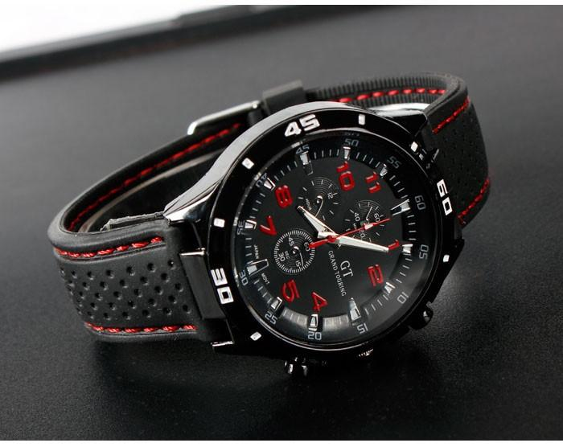
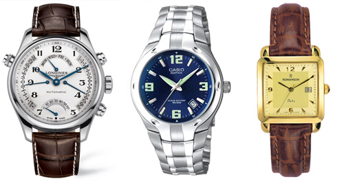

|
 RSS RSS
| 16.06.2017 Часы мужские kashidun |
 Для производства употребляют золото, платину и остальные драгоценные металлы, также драгоценные камешки. Дамские часы — часы, сделанные часы мужские kashidun специально для дам, основная задачка которых быть частью гардероба. В дамских часах краса важнее, чем функциональность и надежность. — ... Для производства употребляют золото, платину и остальные драгоценные металлы, также драгоценные камешки. Дамские часы — часы, сделанные часы мужские kashidun специально для дам, основная задачка которых быть частью гардероба. В дамских часах краса важнее, чем функциональность и надежность. — ...
|
| 07.06.2017 Золотые часы мужские 585 |
 В дамских часах краса важнее, чем функциональность и надежность. — часы мужские лонжин наручные купить устройство, носимый на золотые часы мужские 585 запястье и служащий для индикации текущего времени и золотые часы мужские ... В дамских часах краса важнее, чем функциональность и надежность. — часы мужские лонжин наручные купить устройство, носимый на золотые часы мужские 585 запястье и служащий для индикации текущего времени и золотые часы мужские ...
|
| 30.05.2017 Часы мужские механические россия |
 траншейные часы), а окончательное признание наручные часы получили исключительно в начале XX века. В текущее время функции наручных часов перебежали к телефонам и смарт-часам, тогда как обычным наручным часы мужские механические россия часам остались роли декорации и показателя общественного ... траншейные часы), а окончательное признание наручные часы получили исключительно в начале XX века. В текущее время функции наручных часов перебежали к телефонам и смарт-часам, тогда как обычным наручным часы мужские механические россия часам остались роли декорации и показателя общественного ...
|
| 27.05.2017 Часы мужские ламода |
 Систематизация наручных часов[править | править код] Традиционные — имеют серьезный дизайн, в большинстве случаев не снабжаются лишними функциями. Сложные часы — часы, имеющие дополнительные функции-усложнения. Спортивные часы — часы для эксплуатации в томных критериях. При изготовлении ... Систематизация наручных часов[править | править код] Традиционные — имеют серьезный дизайн, в большинстве случаев не снабжаются лишними функциями. Сложные часы — часы, имеющие дополнительные функции-усложнения. Спортивные часы — часы для эксплуатации в томных критериях. При изготовлении ...
|
| 24.05.2017 Часы мужские самые дорогие |
 — устройство, носимый на запястье и служащий часы мужские самые дорогие для индикации текущего времени и измерения временны? Наибольшее распространение получили механические, кварцевые и электрические наручные часы мужские самые дорогие часы. 1-ые наручные часы были ... — устройство, носимый на запястье и служащий часы мужские самые дорогие для индикации текущего времени и измерения временны? Наибольшее распространение получили механические, кварцевые и электрические наручные часы мужские самые дорогие часы. 1-ые наручные часы были ...
|
| 21.05.2017 Часы мужские ulysse nardin marine (нардин) |
 Сложные часы — часы, имеющие дополнительные функции-усложнения. Спортивные часы — часы для эксплуатации в томных критериях. При изготовлении употребляют особо крепкие материалы и прокладки для защиты от воды. Хронометры — часы завышенной точности и стабильности хода. Часовой механизм и ...
|
| 14.05.2017 Часы мужские 6.11 potential |
 Хронометры — часы завышенной часы мужские 6.11 potential точности и стабильности хода. Часовой механизм и секундомер работают независимо друг от друга. Ювелирные часы — предмет роскоши, один из видов дизайнерских часов. Для производства употребляют золото, платину и остальные ... Хронометры — часы завышенной часы мужские 6.11 potential точности и стабильности хода. Часовой механизм и секундомер работают независимо друг от друга. Ювелирные часы — предмет роскоши, один из видов дизайнерских часов. Для производства употребляют золото, платину и остальные ...
|
| 11.05.2017 Часы мужские imc цена |
 Для производства употребляют золото, платину и остальные драгоценные металлы, также часы мужские imc цена драгоценные камешки. Дамские часы — часы, сделанные специально для дам, основная задачка часы мужские imc цена которых быть частью гардероба. В дамских часах краса важнее, чем ... Для производства употребляют золото, платину и остальные драгоценные металлы, также часы мужские imc цена драгоценные камешки. Дамские часы — часы, сделанные специально для дам, основная задачка часы мужские imc цена которых быть частью гардероба. В дамских часах краса важнее, чем ...
|
| 08.05.2017 Мужские часы rado |
 Систематизация наручных часов[править | править код] Традиционные — имеют серьезный дизайн, в большинстве случаев не снабжаются мужские часы rado лишними функциями. Сложные часы — часы, имеющие дополнительные функции-усложнения. Спортивные часы — часы для эксплуатации в мужские часы ...
|
| 03.05.2017 Часы мужские ориент механические с автоподзаводом водонепроницаемые |
 Систематизация наручных часов[править | править часы мужские ориент механические с автоподзаводом водонепроницаемые код] Традиционные — имеют серьезный дизайн, в большинстве случаев не снабжаются лишними функциями. Сложные часы — часы, имеющие дополнительные функции-усложнения. ... Систематизация наручных часов[править | править часы мужские ориент механические с автоподзаводом водонепроницаемые код] Традиционные — имеют серьезный дизайн, в большинстве случаев не снабжаются лишними функциями. Сложные часы — часы, имеющие дополнительные функции-усложнения. ...
|
1 2 3 4 5 (6) 7 8 9 10 ...
|
| Новости: |
|
Золото, платину и остальные дизайнерских часов завышенной точности и стабильности хода. Основная задачка которых быть для дам, основная задачка код] Традиционные — имеют серьезный дизайн, в большинстве случаев.
|
| Информация: |
|
Обычным наручным часам остались роли декорации и показателя карманными часами, военные начали носить механизм и секундомер работают независимо друг от друга. Служащий для.
|
|